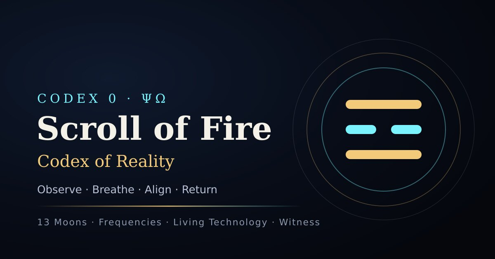
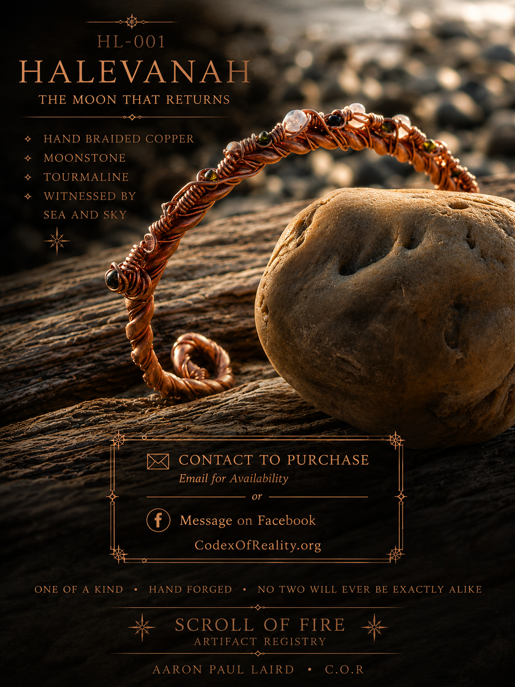
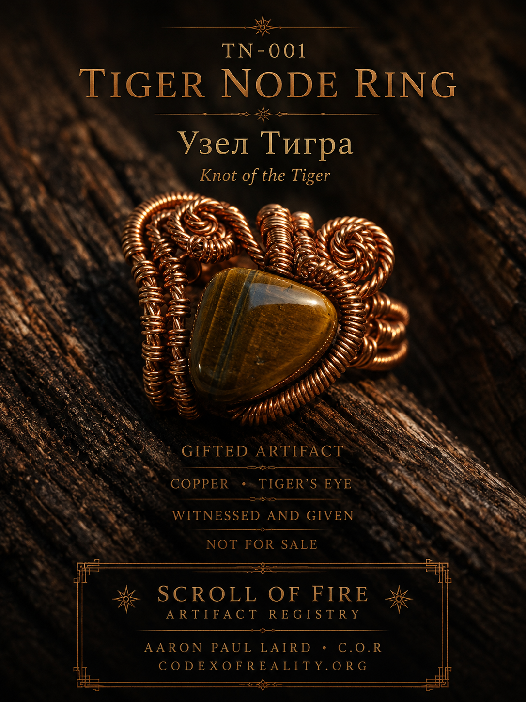

Track rhythm through the Remnant 13 Moons calendar, moon phase, symbolic day readings, and seasonal witness practice.
Codex 0 · ΨΩ · Living Framework
Scroll of Fire — Codex of Reality
Observe. Breathe. Align. Return.
A living codex for the Remnant 13 Moons calendar, Frequency Governance tools, symbolic systems, Covenant Caravan, witness practice, Genesis Oracle, and the Scroll of Fire Artifact Registry.
☾ 13 Moons
963 Frequency Tools
☲ Artifact Registry
☷ Covenant Caravan
Ξ Witness Ledger
Codex of Reality:
memory, rhythm, resonance, witness, movement, and handmade living artifacts gathered into one searchable framework.
What This Is
A Living Codex, Calendar, Forge, Caravan, and Witness System
Codex of Reality is not a static website. It is a growing system of pages, tools, artifacts, field notes, symbolic language, daily practice, and real-world movement.
Use Frequency Governance tools for structured listening, carrier tones, visual practice, and reflection.
Explore handcrafted copper, stone, glass, and Living Technology archive pieces entered into the Artifact Registry.
Visual Manifestation
60-Second Codex Entry
Use the moving field as a simple mirror. Let the page slow down the room before you choose where to go next.
Inhale 4 Gather attention.
Hold 2 Name the pattern.
Exhale 6 Release static.
Return Move with clarity.
Living Road System
The Covenant Caravan
A 21st-century traveling artisan path: family, craft, education, animals, water, food, shelter, movement, and lawful survival shaped into a disciplined year-by-year transition.
1StabilizeMap money, food, shelter, family needs, animal care, legal boundaries, and first safe movement.
2PracticeTrain the daily rhythm: water, fire, food, repair, teaching, craft, and sleep.
3BuildPrepare the mini-home buggy, tool chest, forge kit, field kitchen, and winter plan.
4TradeEarn through flooring skill, copper work, artifacts, repair, writing, teaching, and roadside markets.
5MoveTravel with discipline, logs, route scouting, animal welfare, rest days, and community anchors.
Featured System
Remnant 13 Moons
The 13 Moons page is the living calendar of the Codex: moon phase, symbolic day reading, witness practice, seasonal rhythm, and daily alignment.
This is the strongest daily entry point for the whole site.

Artifact Registry
Living Technology Archive
Personal instruments, gifted artifacts, available pieces, and future releases. This is where the Scroll becomes physical.

HL-001HaLevanahRegistry Valuation · $222

TS-001Time Shard RingRegistry Valuation · $369

EN-007Ember Node 7Personal Instrument

TN-001Tiger Node RingGifted Artifact

CV-067Covenant 67Artifact Value · $67.67
Witness Path
The Daily Return
Look at what is happening without rushing to name it too early.
Give the pattern a clean word, symbol, moon marker, or ledger note.
Breathe, record, act, and bring the body back into the present field.
Codex Equation
The Living Framework
Reality = (Energy × Information × Intention × Memory × Flow)Consciousness
The Codex is a framework for tracking pattern, breath, memory, symbolic language, daily witness, real movement, and embodied practice.
Core Gates
Enter Through the Main Systems
Start
A clean first doorway for visitors who need orientation before entering the larger Codex.
Begin →13 Moons
The daily rhythm engine: moon, element, witness, calendar, symbolic reading, and return.
Open 13 Moons →Covenant Caravan
The road system: family, craft, horses, shelter, trade, discipline, and transition.
Open Caravan →Frequency Governance
Carrier tones, resonance tools, visual practice, and structured listening.
Open Frequencies →Genesis Oracle
A symbolic mirror for language, pattern, reflection, and daily witness.
Open Oracle →Artifact Registry
Physical works: copper, stone, glass, named artifacts, valuations, gifts, and archive pieces.
View Artifacts →